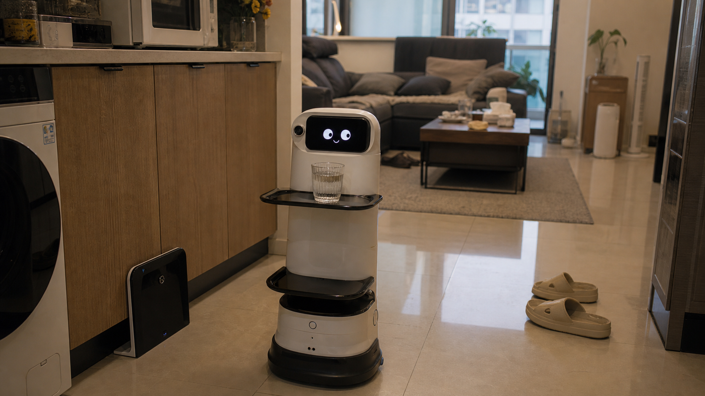

EVANS · GRADUATION DEFENSE · 2026
TSINGHUA · ACADEMY OF ARTS & DESIGN
INFORMATION DESIGN
EVANS · 硬件原型
胸针 / 项链 · < 25g
E · V · A · N · S
面向长期陪伴协作关系的
智能体与系统设计
智能体与系统设计
艺术与科技（信息设计）
|
张一文
|
指导教师 付志勇 教授
「真正成熟的代理 AI，是知道什么时候应该不说话。」
01 / 17
01 / BACKGROUND
———
研 究 背 景
问题从哪来
老龄化加速 与
尚未真正了解你的 AI
尚未真正了解你的 AI
01 · 人口结构
3.10亿
中国 60 岁以上人口（2024 年末）
占总人口 22%，且持续加速
占总人口 22%，且持续加速
02 · AI 现状
短期上下文
偏好条目
偏好条目
AI 记忆停留在单次任务尺度
个性化 ≠ 长期关系
个性化 ≠ 长期关系
03 · 用户访谈
“它很聪明，
却并不真正了解我。”
却并不真正了解我。”
本研究访谈中出现
频率最高的表述
频率最高的表述
独居、慢病管理、代际疏离、防诈骗 —— 这些问题集中提出了对
「既能持续理解、又能克制介入」的陪伴技术的需求。
AI 能力已经很强，但产品体验仍延续工具范式：记忆服务于单次任务、个性化停留在偏好条目、代理能力是可选插件 —— 缺少围绕长期关系被组织起来的治理结构。
AI 能力已经很强，但产品体验仍延续工具范式：记忆服务于单次任务、个性化停留在偏好条目、代理能力是可选插件 —— 缺少围绕长期关系被组织起来的治理结构。

EVANS · 张一文
03/ 17

02 / RESEARCH QUESTION
———
研 究 问 题
一个核心问题 · 三个子问题
AI 与人之间的关系，
究竟应该是什么？
究竟应该是什么？
CORE QUESTION · 核心问题
如何使 AI 从被动响应的工具，转变为可持续陪伴用户长期的「个人 AI 大脑」，
并在这一过程中持续支撑叙事认同、得体承担认知负担、并维持设计上的伦理克制？
并在这一过程中持续支撑叙事认同、得体承担认知负担、并维持设计上的伦理克制？
子问题 ①
理论基础
长期陪伴型 AI 应建立在
怎样的理论基础上？
怎样的理论基础上？
子问题 ②
核心机制
Evans 的核心机制
应如何展开？
应如何展开？
子问题 ③
伦理约束
深度介入 AI 应遵循
怎样的伦理约束？
怎样的伦理约束？
三个问题在论文中互相缠绕，不能只回答其中一个。
EVANS · 张一文
04/ 17
12 / REFLECTION & LIMITATIONS
———
研 究 反 思
主动承认局限，展现学术成熟
反思与局限
三个维度分别有一个内在张力，
论文用一整章主动讨论
论文用一整章主动讨论
① 认知维度
长期认知卸载是否
导致用户记忆退化？
导致用户记忆退化？
RESPONSE
Evans 辅助记忆，
而非替代记忆 ——
人生回忆录由用户自己
讲述与编辑。
而非替代记忆 ——
人生回忆录由用户自己
讲述与编辑。
② 叙事维度
AI 整理人生时，
"比用户更懂用户"的诱惑
"比用户更懂用户"的诱惑
RESPONSE
叙事主权留在用户手中，
所有内容可编辑、
可删除 ——
AI 不负责定义"你是谁"。
所有内容可编辑、
可删除 ——
AI 不负责定义"你是谁"。
③ 关系维度
以"为用户好"之名，
不断扩展干预范围
不断扩展干预范围
RESPONSE
分寸感引擎只是
设计层回应 ——
最终仍需商业模式与
监管框架共同支撑。
设计层回应 ——
最终仍需商业模式与
监管框架共同支撑。
论文局限坦白
· 验证只能在短期展演尺度
|
· 访谈仅 8 位（用于发现机会，非统计推断）
|
· 部分机制停留设计阶段
|
· 商业模式待研究
EVANS · 张一文
14/ 17